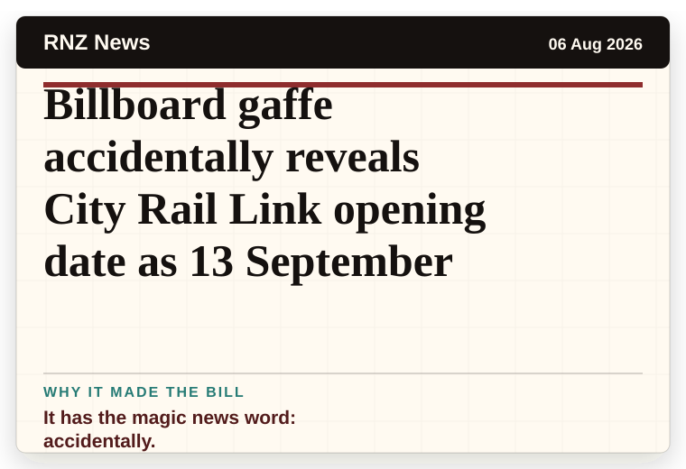
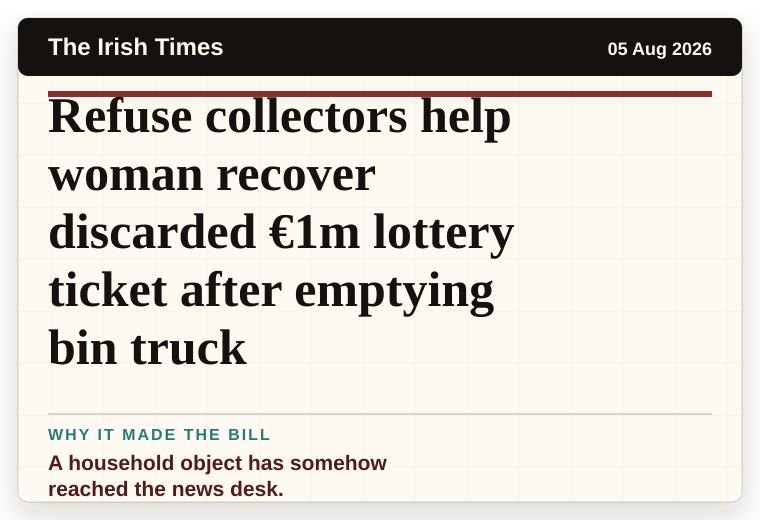
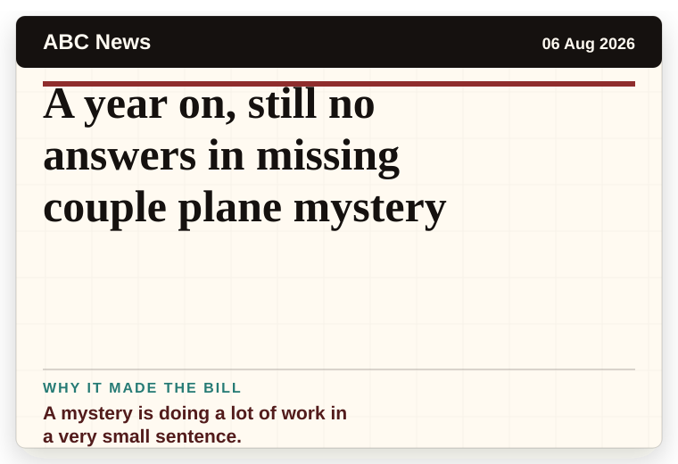
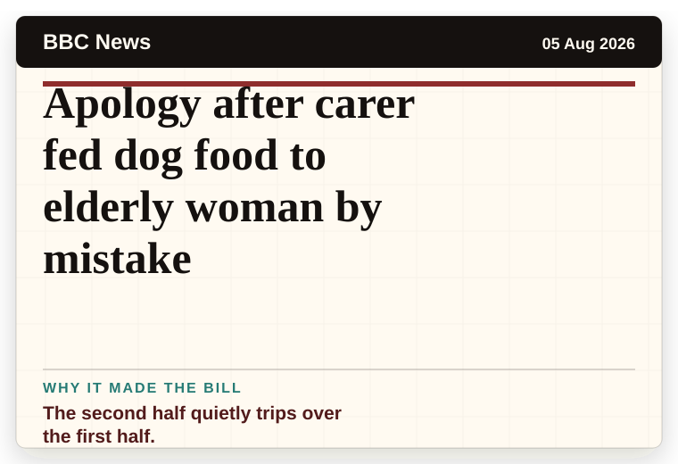
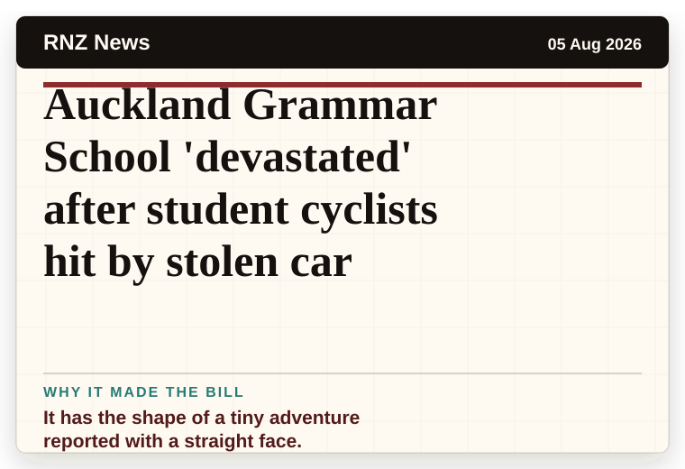
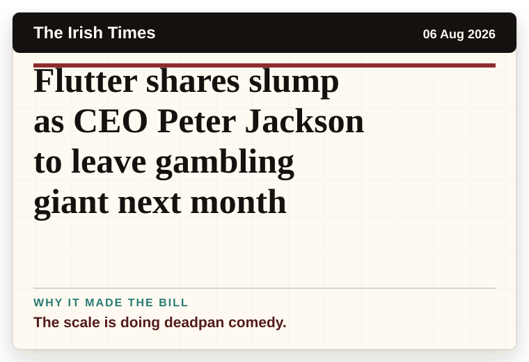
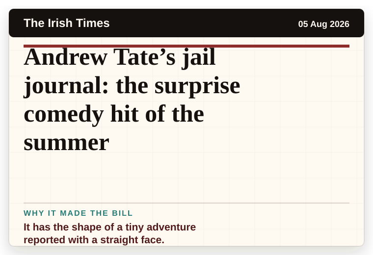

NT News
Australia
Caravan park giant G’day Group bets big on Aussie tourism with $40m deal
The scale is doing deadpan comedy.
The latest daily picks, linked back to the original sources. Search the room, pick a source, or follow a headline out to the full story.
Record updated: 06 Aug 2026, 07:57 AM AEST
Showing 19 headline candidates from the refresh run completed on 06 Aug 2026, 07:57 AM AEST.
The scale is doing deadpan comedy.

The scale is doing deadpan comedy.

A wonderfully specific detail has taken centre stage.

The word chaos gives it open-mic energy.

The second half quietly trips over the first half.

A wonderfully specific detail has taken centre stage.

A mystery is doing a lot of work in a very small sentence.

A mystery is doing a lot of work in a very small sentence.

It has the shape of a tiny adventure reported with a straight face.

The scale is doing deadpan comedy.

It has the magic news word: accidentally.

A household object has somehow reached the news desk.
The headline is already trying not to laugh.

A mystery is doing a lot of work in a very small sentence.

The second half quietly trips over the first half.

It has the shape of a tiny adventure reported with a straight face.

It has the shape of a tiny adventure reported with a straight face.

The scale is doing deadpan comedy.

It has the shape of a tiny adventure reported with a straight face.